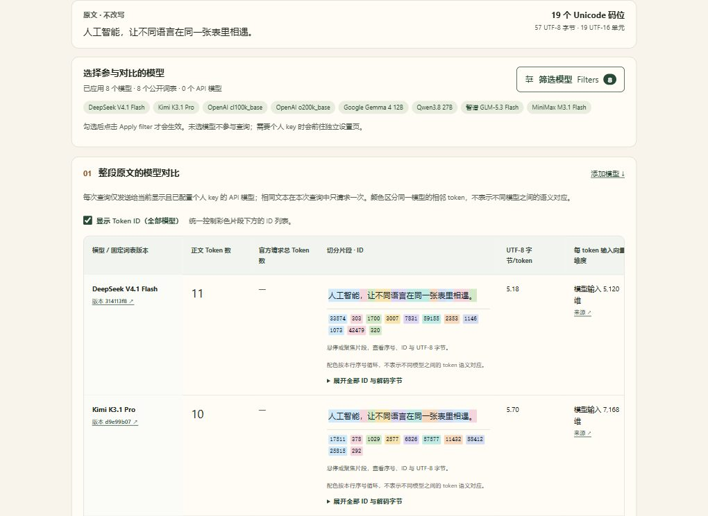

Hanzi Token Lab · 多语言 Token 对照台
固定版本：c3638228ebe1f3dd93f6bb866addca90b08f71d7
一个浏览器端的多模型分词实验台。把同一段文字交给不同的 tokenizer，比较真实 token 数、彩色切分片段、ID 和 UTF-8 字节，并区分公开词表的正文切分与官方 API 的请求计数。
- 支持中文、英语、西班牙语和日语；中文比较原文、繁体与简体，日语比较汉字假名混写原文与词典推导的两种假名读音。
- 内置八套公开 tokenizer，可按模型筛选，或增加公开 Hugging Face 词表；一个默认开启的开关统一显示所有 Token ID。
- OpenAI、Claude 等 API 模型由访问者自行选择并提供个人 key；密钥保存在访问者的浏览器中，未选择的模型不发请求。
- API 未提供的切分片段、ID 和内部向量维度保持未知。日语读音转换可能有歧义，不能作为日常书写规范。
